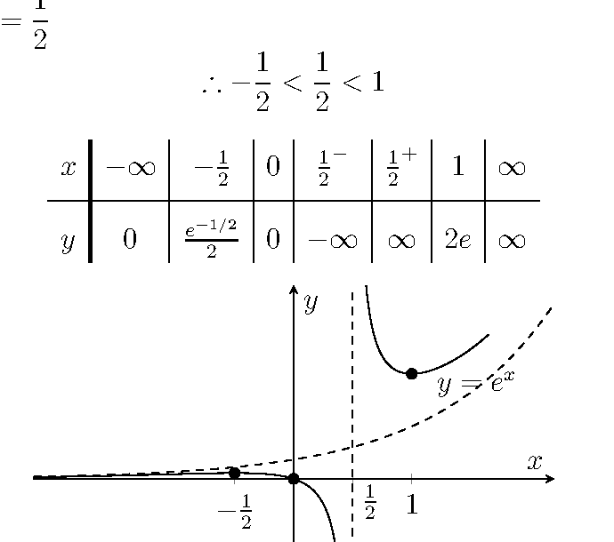
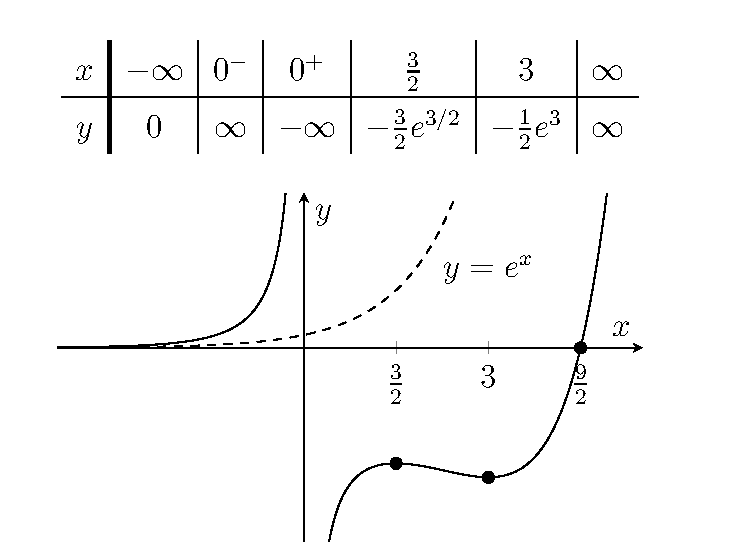

\[y=\frac{x-a}{x-b}e^x\]
\[
\begin{aligned}
\frac{dy}{dx}
&=e^x\left(\frac{x-a}{x-b}+\frac{a-b}{(x-b)^2}\right)\\
&=\frac{e^x}{(x-b)^2}\bigl((x-a)(x-b)+a-b\bigr)\\
&=\frac{e^x}{(x-b)^2}\bigl(x^2-(a+b)x+ab+a-b\bigr)
\end{aligned}
\]
\[
\begin{aligned}
\Delta >0\implies \bigl(a+b\bigr)^2-4(ab+a-b)&>0\\
(a-b)(a-b-4)&>0
\end{aligned}
\]
\[a-b<0\quad\text{or}\quad a-b>4\]
(i)
\[
\begin{aligned}
x^2-\frac12x-\frac12&=0\\
2x^2-x-1&=0\\
(2x+1)(x-1)&=0
\end{aligned}
\]
\[x=-\frac12,\quad x=1\]
Vertical asymptote: \(\displaystyle x=\frac12\)
\[\therefore -\frac12<\frac12<1\]

(ii)
\[x^2-\frac92x+\frac92=0\implies (2x-3)(x-3)=0\]
\[x=\frac32,\qquad x=3\]
Vertical asymptote: \(x=0\)
